本教程使用的配置脚本由逗比发布，现在逗比被公诉，不建议继续使用本教程以及SSR等停更软件，有需求的可以参考trojan教程 ！
本教程使用的配置脚本由逗比发布，现在逗比被公诉，不建议继续使用本教程以及SSR等停更软件，有需求的可以参考trojan教程 ！
本教程使用的配置脚本由逗比发布，现在逗比被公诉，不建议继续使用本教程以及SSR等停更软件，有需求的可以参考trojan教程 ！
trojan是一个比较新的翻墙软件，在设计时采用了更适应国情的思路。在穿透GFW时，人们认为强加密和随机混淆可能会欺骗GFW的过滤机制。然而，trojan实现了这个思路的反面：它模仿了互联网上最常见的HTTPS协议，以诱骗GFW认为它就是HTTPS，从而不被识别。大家可以试试看trojan，虽然配置过程略微复杂了点，但是在trojan的官方群里面，目前为止没有人反馈被墙记录呀！
综述
本文总结了自己在搭建VPS过程中遇到的各种坑，以及最后的解决方案，以供大家参考。本文分为5章，将按操作顺序介绍部署用于SSR代理服务的VPS服务器的详细过程，按照步骤操作一切正常的话半小时之内即可配置成功。如果配置过程中有什么疑问，欢迎在留言区交流！
VPS服务器购买
注册vultr
我使用的服务器是vultr。主要因为其按小时计费，随时可以停用服务器。这一点很重要，现在GFW相当高，很容易被墙。一旦被墙月结的损失比较大。其次，vultr本身没有被墙，这一点很重要，不然就是先有鸡还是先有蛋的问题了。当然，可以支付宝或微信付款也是一个加分点。vultr注册地址：https://www.vultr.com。点击链接跳转到vultr，网页右上角有个Create Account就是注册的地方了，接下来就是注册并激活账号了。
最新资讯：vultr充值10美元送50美元活动开始啦，必须是新用户，可支付宝或微信等支付方式，活动注册地址：https://www.vultr.com！不过要注意的是，赠送的50美元有效期只有一个月，所以这一个月你可以开配置好一点的vps啦！！！
充值
在购买服务器之前需要先充值。登陆vultr之后如图Billing->Alipay，选好要充值的金额数，然后Pay with Alipay即可跳转到支付宝扫码支付页面。 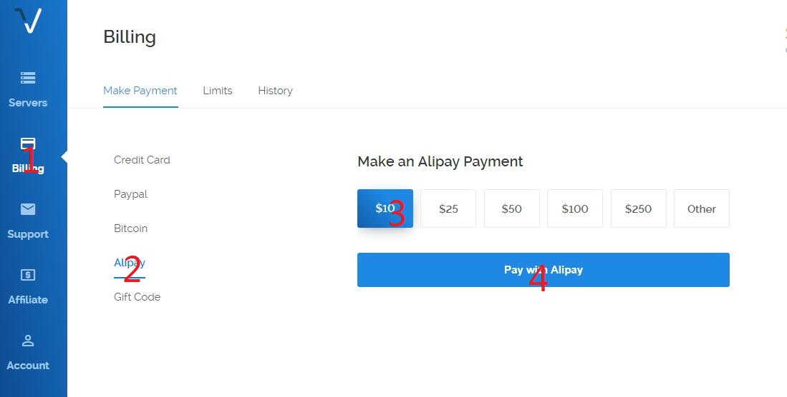
购买服务器
点击vultr网页右上角的蓝色+图标即可为账户添加服务器。 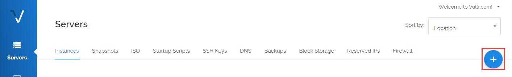
注意：向下滚动有很多选项，不要直接点击Deploy Now，这样会使用默认参数，但不是我们想要的！ 第一个选项为选择服务器地址（Server Location），建议选择硅谷（Silicon Valley，离google最近），而不要选择日本（用的人多，大部分IP已经被墙）； 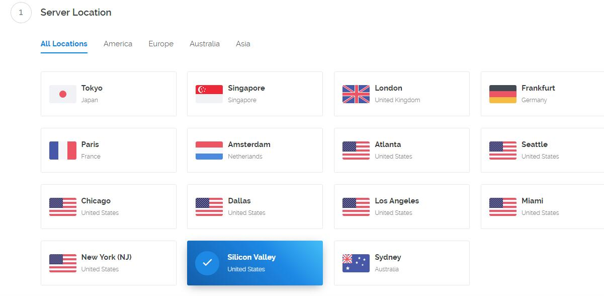
第二个选项为选择服务器类型（Server Type），即选择服务器操作系统。建议选择Debian 8 x64，默认没有防火墙，会减少很多麻烦。 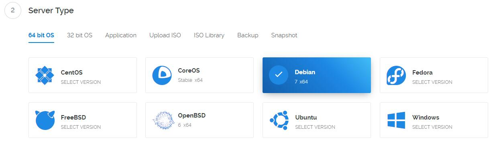
第三个选项为选择服务器大小（Server Size），即选择服务器硬件性能。因为我们使用VPS服务器FQ，所以性能瓶颈不在配置，而在网络带宽之类的。由于vultr的服务器带宽都是100M的，所以服务器当然是往便宜了选。当然，2.5d/mo的一般都是缺货的。选择5d/mo的就好，一个月三十几块钱，要是有好几个人一起分担的话就相当实惠了。 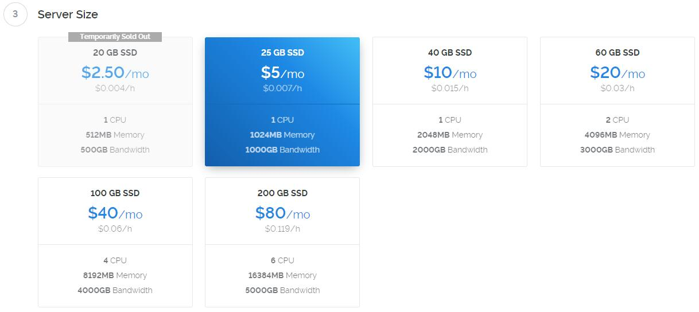
第四、五、六三个选项不懂就可以不用管它。
第七条要求为即将部署的服务器命名并给一个标签，随意就好。
此时可以点击右下角的现在展开（Deploy Now），vultr即开始分配资源，安装系统。此时Servers页面可以看到服务器信息，状态显示installing。当状态切换为Running的时候，服务器就可以使用了。 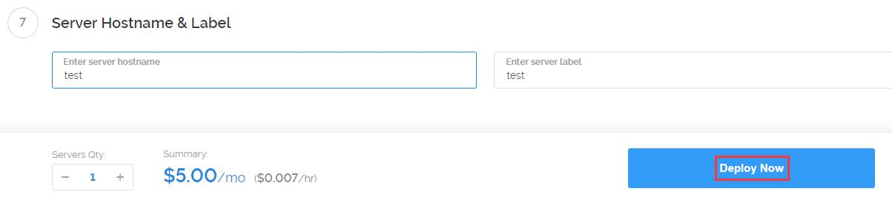
服务器信息查看
服务器安装结束之后在Servers页面点击刚才购买的服务器名字即可跳转到服务器详情页。如图右上角有一个View console可以直接通过网页连接到服务器，但是由于它是老外弄的，所以不支持中文和复制粘贴，不能使用，我们需要使用第三方工具连接到服务器。所以需要知道IP、用户名和密码，如图左下角。 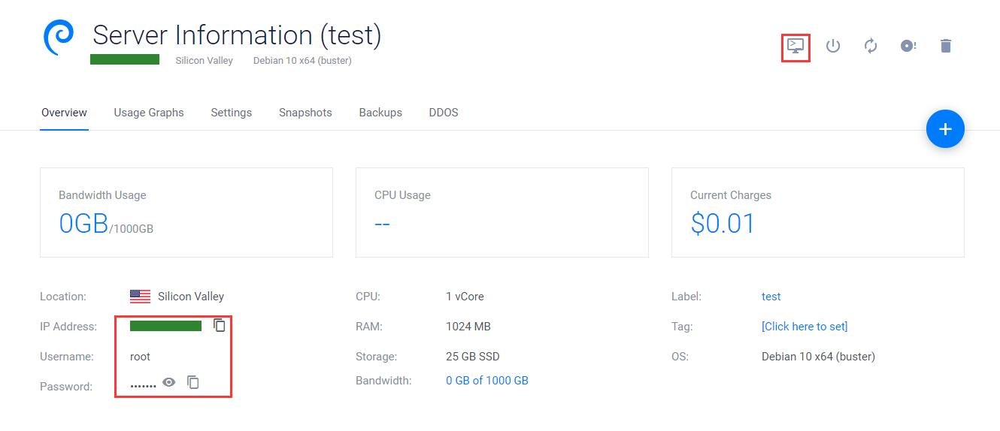
VPS服务器部署
远程工具安装
这个第三方远程管理工具叫做Xshell，现在是第五版。自己随便找个连接下载就好了，各个软件管家里面都有的。而且Xshell学生和家庭版是免费的，可以随便使用而不需要破解。安装好Xshell之后即可开始连接服务器进行部署了。
连接服务器
启动Xshell，从菜单栏的文件->新建打开新建会话窗口如下图。会话名称随便取一个都可以，主机填写刚才记下来的服务器IP地址。点击确定立即尝试连接服务器，如果能连接上服务器会提示输入用户名和密码。用户名为root，密码可以从vultr服务器详情页拷贝过来。可以记住用户名和密码，这样下次连接就不用再输入那个复杂的密码了（当然密码是可以修改的，但是没必要。系统自动生成的密码强度相当高，可以避免暴力破解。自己设的密码就不好说了，而且还容易忘记）。 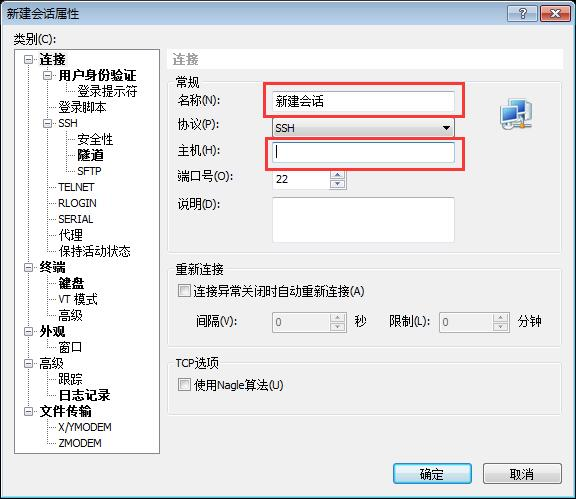
连接成功之后会出现命令提示符：root@username:~# 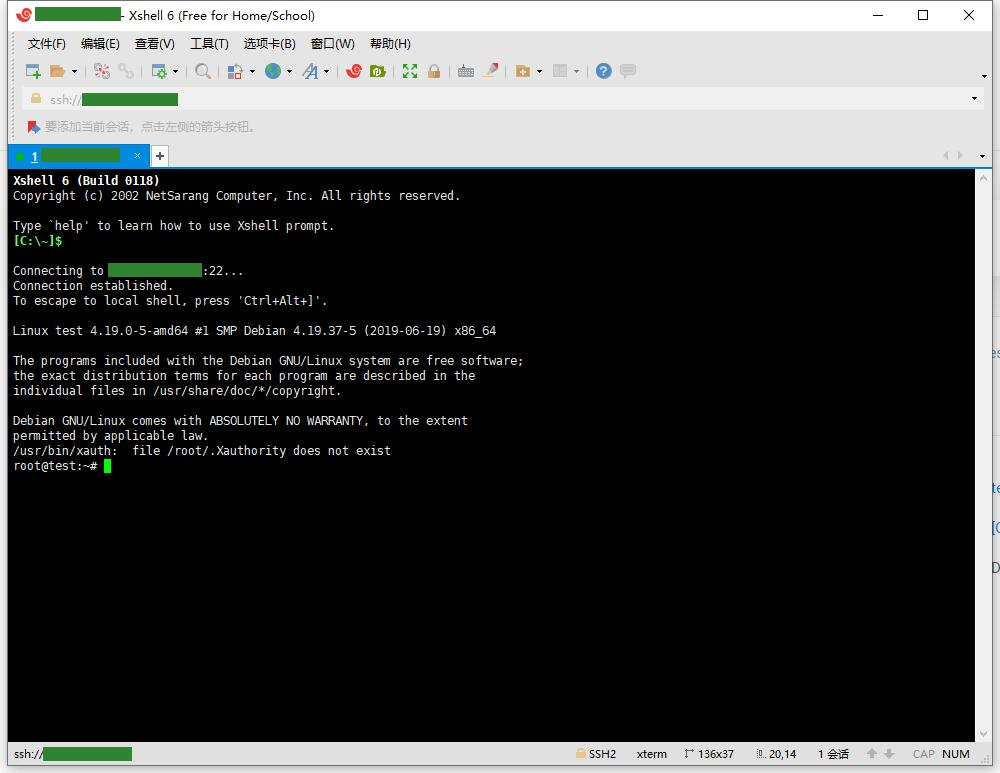
接下来就可以开始安装SSR了。如果Xshell一直连不上服务器，那么多半是被墙了，可以尝试着ping一下服务器看看。如果ping不通的话就只能换掉服务器了（血的教训：先购买新服务器，再去vultr服务器页面Destroy。反过来的话间隔太小，估计又买到原来的ip了）。
安装ShadowsocksR一键管理脚本
接下来要通过一个一键管理脚本安装SSR，作者是在Debian 7 x64上开发的该脚本，这也是为什么推荐这个系统的原因之一。
首先需要安装wget（Web Get），使得可以在命令行下载互联网文件。命令如下：
1 | apt-get install wget |
如果上面命令提示command not found，则改用下面的命令替代之，反之亦然：
1 | yum -y install wget |
拷贝安装一键管理脚本的命令到控制台运行。然后等待脚本安装完成，期间如果有提示输入Y记得输入一下。注意，命令的参数包括命令后面的网址，要一起拷贝，虽然显示出来可能是两行，但其实是没有换行的。
1 | wget -N --no-check-certificate https://raw.githubusercontent.com/ToyoDAdoubiBackup/doubi/master/ssr.sh && chmod +x ssr.sh && bash ssr.sh |
上述命令运行后会提示你输入数字来选择要做什么。输入 1 ，就会开始安装ShadowsocksR服务端，并且会提示你输入ShadowsocksR的 端口/密码/加密方式/ 协议/混淆（混淆和协议是通过输入数字选择的） 等参数。虽然没有必要，但是可以考虑重启一下服务器（命令：reboot）。然后输入运行脚本的命令即可开始配置SSR了。运行管理脚本的命令为：
1 | bash ssr.sh |
安装ShadowsocksR
运行脚本：
1 | bash ssr.sh |
输入命令对应的数字来执行命令。
1 | ShadowsocksR 一键管理脚本脚本 [v2.0.35] |
建议配置为：
1 | 端口：443 |
所以按照如下步骤配置即可（下面步骤输入的数字可能会随着版本的变化而有细微变化，以实际为准。内容太多，懒得截图了）：
- 运行：bash ssr.sh；
- 输入4：安装libsodium，chacha20加密协议的依赖包，等待安装完成，期间如果有提示输入Y记得输入一下；
- 运行：bash ssr.sh；
- 运行安装SSR的命令：1。安装ShadowsocksR；
- 输入端口号：443。443端口为HTTPS协议的默认端口，经过测试是最稳定的（不建议使用其他端口或者使用多端口模式，不过，如果需要在该vps服务器搭建https协议的网站的话就不能使用这个端口啦！）；
- 输入密码：强度越大越好，反正不需要记忆；
- 输入15：使用chacha20加密方式；
- 输入2：使用authsha1_v4协议插件，输入2并确认后会提示是否兼容原版，原版指的是Shadowsocks，没有必要选择兼容，填n后回车即可。
- 输入2：使用http_simple混淆，延时小，可靠性高，同样也不需要兼容原版；（小概率导致windows客户端无法连接，可尝试切换其它协议。）
- 然后就是一些限制，一般默认几次回车就好了。
上面的步骤无误之后一键管理脚本就开始安装SSR了，过一会儿会提示下载文件，输入y后回车即可，然后继续等待。
安装完成之后会显示服务器配置信息。包括ip、端口、密码、加密、协议、混淆等。当然这些都没必要记下来（如果Linux客户端应该是要手动输入的），配置客户端的时候只需要Xshell最下面出现的SSR链接即可。
安装BBR和封禁垃圾端口
运行bash ssr.sh命令后输入14即可进入安装BBR和封禁垃圾端口的界面。这两个都按提示部署一下即可，注意BBR安装的时候可能会提示“是否终止卸载内核”，这是系统检测到使用了权限较高的操作，因为BBR需要更换内核，所以我们要选择NO。BBR是google开发的拥塞控制算法，亲测有效，安装之后google秒开，不安装延时相当大。
windows客户端部署
几点说明，首先SSR项目由于某些原因已经从GitHub移除了，所以SSR的PCA模式已经不能使用了。其次，不要使用360浏览器，国内浏览器厂商和GFW有py交易的。所以，推荐使用SSR+chrome插件SwitchyOmega实现只能chromeFQ的目的。这样SSR使用直连模式，由chrome插件决定当前流量是否走代理。如果你有别的用途可以单独在某个软件内部使用SOCKS5协议指定代理，地址为SSR的地址：127.0.0.1:1080，如果有需要可以留言，我再看看要不要补充吧。
配置ShadowsocksR
配置SSR之前请将所有安全软件以及国产浏览器关闭，否则IP很快就会被封掉！
ShadowsocksR客户端下载地址SSRforWindows。SSR不需要安装就可以直接运行，但是会在当前目录生成许多运行时文件，所以建议拷贝ShadowsocksR-4.7.0-win文件夹到电脑里面，然后根据自己系统安装的.net情况运行ShadowsocksR-dotnet4.0.exe或者ShadowsocksR-dotnet2.0.exe。为了方便自己建立一个快捷方式到桌面或者设置开机自启即可。运行SSR之后可以在托盘区看到一个小飞机。
复制服务器SSR链接到剪贴板（在Xshell中： 1. 输入 bash ssr.sh；2. 输入 5；3. 复制ssr链接），然后右键小飞机剪贴板批量导入ssr://链接…，如图所示： 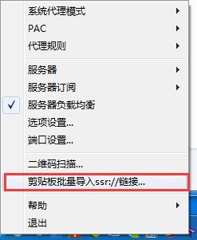
初始的时候软件里会有一台免费的服务器，由于SSR作者已经没有维护了，是不能用的，需要将其删除掉，然后确定。如图所示： 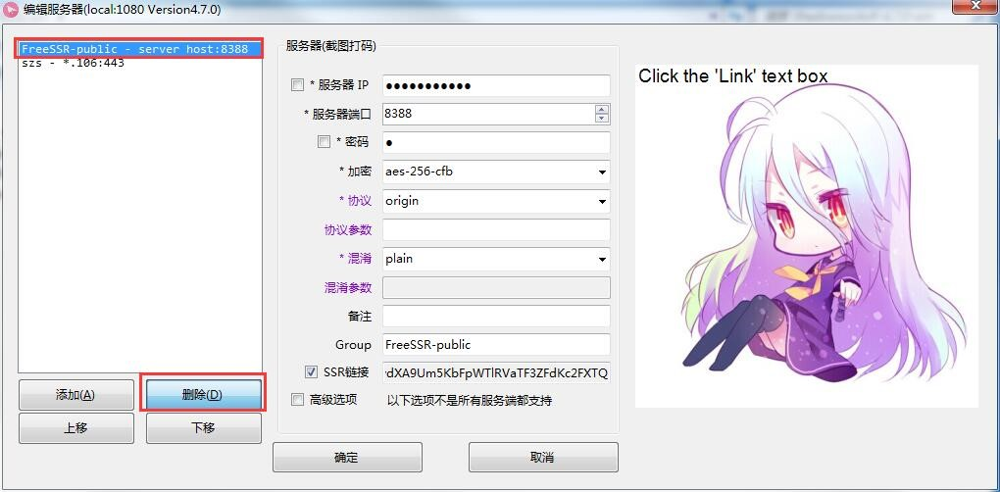
此时已经可以访问google啦！由于服务器是美国的服务器，访问google的时候请使用google.com。其它后缀会慢很多。但是不要急着去玩，后面两步更加重要！！！
安装SwitchyOmega_Chromium插件
在 Chrome 地址栏输入 chrome://extensions 打开扩展程序，点击底部获取更多拓展程序。搜索proxy即可找到SwitchyOmega插件安装之。
配置SwitchyOmega插件（以下每一步配置完之后记得应用选项）
在chrome右上角打开SwitchyOmega配置界面，如图所示： 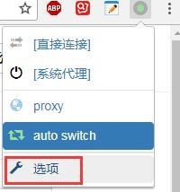
情景模式中的auto switch配置如图所示：注意规则列表规则选择proxy，规则列表格式为AutoProxy，其网址为：
1 | https://raw.githubusercontent.com/gfwlist/gfwlist/master/gfwlist.txt |
填写完成之后需要先更新情景模式使其生效，如图所示： 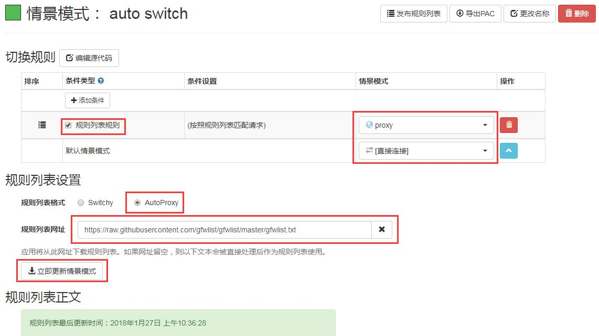
情景模式中的proxy配置如下图所示，其中代理协议选择SOCKS5，这是SSR支持的协议，注意不要选错了，127.0.0.1:1080为SSR代理地址，只有流向这个地址的流量SSR才会处理，如果SSR配置有修改本地端口号这里也得对应的修改。 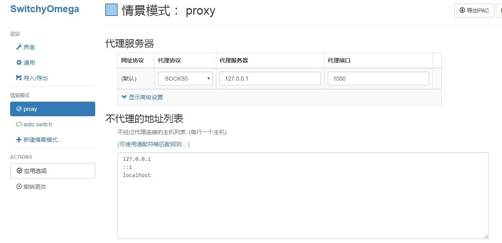
设定中的初始情景模式选择auto switch，如图所示。这样当检测到目标地址在GFW列表中的时候chrome会让其走SSR代理。否则直连。 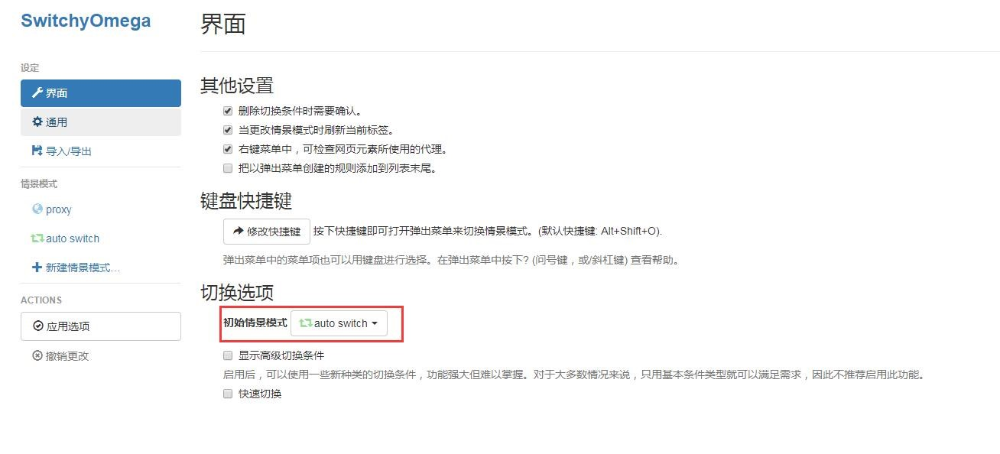
然后重启chrome，保证SwitchyOmega运行在auto switch模式，否则可能无法正常使用，常见现象有无法访问国外网站、导致访问国内网站速度变慢或无法访问内网等。如图所示： 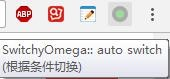
修改SSR参数
刚才没有在配置好SSR之后修改参数的原因在于如果改了参数就访问不了google了，这样安装不了SwitchyOmega插件（其实可以去GitHub下载安装）。所以刚配置好SSR的时候使用了全局模式，保证能访问google，但是这样流量会被国内软件检测到，所以让关闭所有国内软件了。现在要将SSR参数修改为直连模式，等待被chrome调用即可。步骤如下：
右键小飞机系统代理模式改为“直连模式”，如图所示： 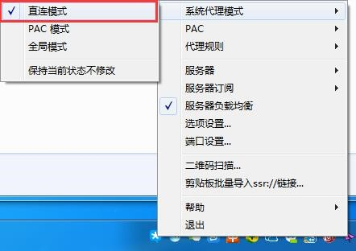
右键小飞机代理规则改为“全局”，如图所示： 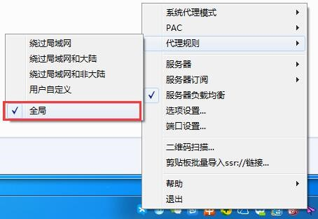
至此SSRwindows客户端已经配置完成，尽情享受吧！！！
可以打开安全软件和杀毒软件了！！！
其他客户端部署指南
Linux客户端一键安装配置脚本：SSRforLinux；
Linux客户端GUI版本：SSRforLinuxGUI；
MAC客户端：SSRforMAC；
IOS客户端：SSRforIOS；
Android客户端：SSRforAndroid。